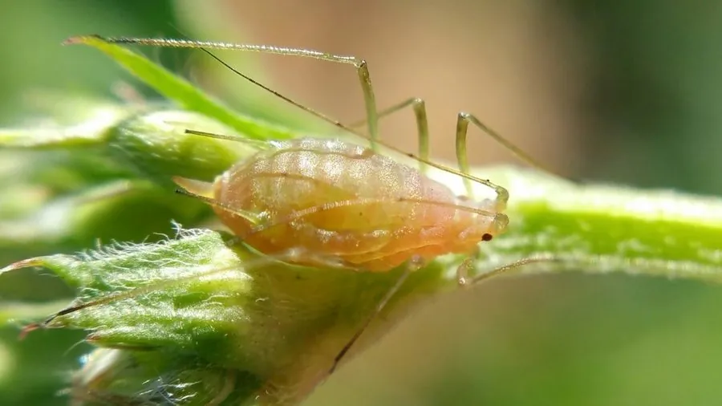

昆虫 · 动物界
豌豆蚜 Acyrthosiphon pisum

豆科作物上的常见蚜虫，体呈绿色或红色，以孤雌胎生快速繁殖，能传播植物病毒，却又与共生细菌关系密切。
- 分类
- 门节肢动物门纲昆虫纲目半翅目科蚜科属豌豆蚜属
- 栖息环境
- 豆科作物的嫩茎、叶背与花器，温带农业区常见
- 地理分布
- 全球温带地区，随豆科作物广泛分布
- 保护级别
- 暂无评估
物种志
豌豆蚜成虫体长 3–4 mm，体形柔软，呈绿色或红色，有两种色型。它的身体呈梨形，腹末有一对腹管，触角细长；有翅型和无翅型个体可随环境条件转换，有翅型用于迁飞扩散。
豌豆蚜分布于全球温带地区，以豆科植物如豌豆、紫花苜蓿和蚕豆为食，是重要的农业害虫。它主要在植物嫩茎和叶背刺吸汁液，导致叶片卷曲、生长受阻，还能传播多种植物病毒。豌豆蚜繁殖速度惊人：在温暖季节，雌蚜可不经交配直接胎生若虫，即孤雌生殖，数天即可繁殖一代，种群迅速扩大；环境恶化时产生有翅型迁飞，秋末出现雄蚜进行有性生殖并产卵越冬。豌豆蚜体内还共生着能合成氨基酸的细菌，是研究昆虫与微生物共生的重要材料。
形态与习性
- 食性刺吸豌豆、苜蓿等豆科植物的汁液
- 体长成虫 3–4 mm
- 繁殖温暖季节孤雌胎生，数天繁殖一代
- 色型绿色型和红色型两种
- 扩散环境恶化时产生有翅型迁飞
- 危害导致叶片卷曲，并传播植物病毒
趣味知识
- 豌豆蚜在温暖季节能孤雌胎生，数天就繁殖一代。
- 它有两种色型：绿色型和红色型。
- 豌豆蚜体内共生细菌能合成氨基酸，是共生研究的经典材料。
- 它传播多种植物病毒，对豆科作物危害很大。